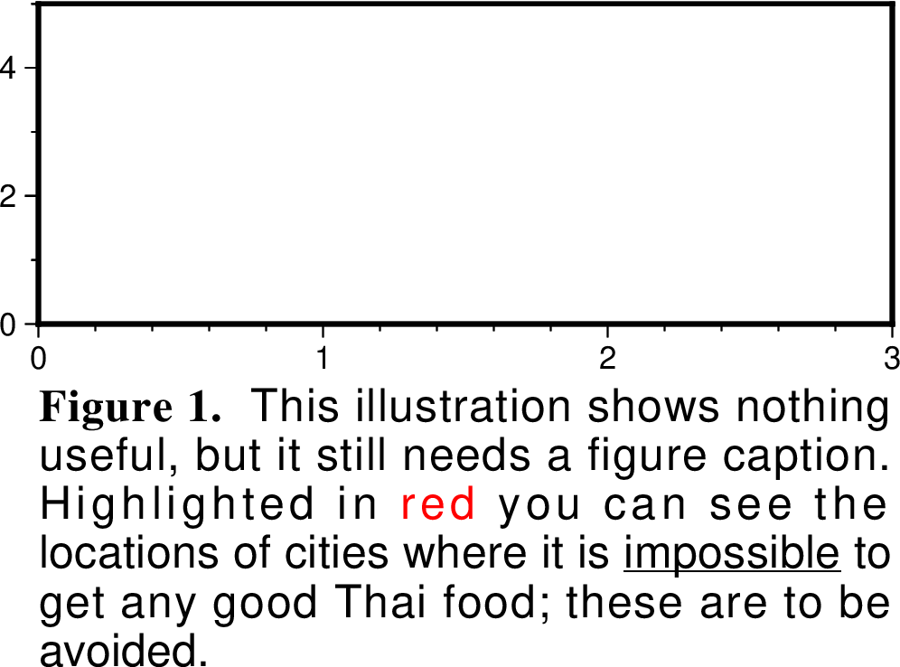

text
- 官方文档:
- 简介:
在图上写文本
text 绘制各种大小、字体和方向的文本字符串，并可以选择绘制和标注地图边界。
支持希腊字母、下标、上标和小型大写字母，详情请参考 特殊字符 和 转义序列 。
使用 -G 或 -W 选项，可以绘制文本下方的背景矩形。注意这不适用于包含上/下标、符号或组合字符的字符串，除非在段落模式 -M 下。
将字符串包含在 @[ ... @[ 或 <math> ... </math> 之中可以排版 LaTeX 表达式，详情请参见 LaTeX 表达式。
语法
gmt text
[ textfiles ]
[ -A ]
[ -B[p|s]parameters ]
[ -C[dx[/dy]][+to|O|c|C] ]
[ -D[j|J]dx[/dy][+v[pen]] ]
[ -F[+a[angle]][+c[justify]][+f[font]][+j[justify]][+h|l|r[first]|ttext|z[format]] ]
[ -G[fill][+n] ]
[ -Jparameters ]
[ -Jz|Zparameters ]
[ -L ]
[ -M ]
[ -N ]
[ -Ql|u ]
[ -Rwest/east/south/north[/zmin/zmax][+r][+uunit] ]
[ -S[dx/dy/][shade] ]
[ -U[stamp] ]
[ -V[level] ]
[ -Wpen ]
[ -X[a|c|f|r][xshift] ]
[ -Y[a|c|f|r][yshift] ]
[ -Z ]
[ -aflags ]
[ -eregexp ]
[ -fflags ]
[ -hheaders ]
[ -iflags ]
[ -pflags ]
[ -qiflags ]
[ -ttransp ]
[ -wflags ]
[ -:[i|o] ]
[ --PAR=value ]
输入数据
- textfiles
一个或多个输入文件，每行格式为 x y [font angle justify] text 。 根据
-F的参数决定是否需要方括号中的项。如果未给定文件， text 将读取标准输入。 font 格式为 [size,][fontname,][color]，其中 size 是以磅 (points) 为单位的文本大小， fontname 是要使用的字体， color 设置字体颜色。 font 后附加 =pen 可以设置文字的描边轮廓。 angle 是从水平方向开始逆时针方向测量的角度（单位为度）， justify 设置对齐方式。 fontname 可以用字体编号表示，也可以用字体名称表示。使用-L可以列出所有的字体编号和名称。(x,y) 是文本字符串锚点的坐标位置，锚点由对齐方式 justify 设置。详情请参见 锚点 。
可选选项
- -A
- -A
默认情况下， 输入数据中 angle 是指沿水平方向逆时针旋转的角度。
-A选项表明 angle 是方位角，即相对于北向顺时针旋转的角度。
- -B
- -Bparameters
设置底图边框和轴属性。 (参数详细介绍)
- -C
- -C[dx[/dy]][+to|O|c|C]
设置文本框与文本之间的空白区域，默认值为字体大小的15%。该选项仅当指定了
-W或-G选项时才有效。 dx 可以是具体的距离值也可以接 % 表示空白与当前字号的百分比，例如 -C1c/1c 或 -C20%/30%。 如果未指定 dy ，则默认为与 dx 相等。 +t 可以用于进一步控制文本框的形状：
- -D
- -D[j|J]dx[/dy][+v[pen]]
文本在指定坐标的基础上偏移 dx,dy ，默认值为
0/0即不偏移。如果未指定 dy ，则默认为与 dx 相等。使用 text 经常遇到的情况是在台站处标记台站名，此时传递的位置参数通常是台站坐标，因而会将文本置于台站坐标处。 该选项用于将文本稍稍偏离台站坐标位置以避免文本挡住台站处的符号。
-Dj ：表示沿着 justify 的方向偏移
-DJ ：表示将角落处的对角线偏移量缩短 \(\sqrt{2}\) 倍
附加 +v 表示绘制一条连接初始位置与偏移后位置的直线， pen 控制连线的画笔属性。 注意： -Dj|J 选项不能与段落模式
-M一起使用。
- -F
- -F[+a[angle]][+c[justify]][+f[font]][+j[justify]][+h|l|r[first]|ttext|z[format]]
默认情况下，文本将水平放置，字体属性由 FONT_ANNOT_PRIMARY 控制，对齐方式为中心位置的锚点。 使用本选项可以设置字体、角度和对齐方式：
+a ：设置文本角度。如果未给出具体角度，则输入文件中必须包含一列角度数据。
+A ：强制将文本基线转换为 -90/+90 范围（防止文本颠倒）。
+c ：附加对齐方式 justify ，从而使用从
-R选项中提取的坐标，而不是从输入文件中读取。 例如， -F+cTL 将从-R范围中获取 x_min 和 y_max ，将文本绘制在地图的左上角。+f ：设置字体 [size][,fontname][,color] 。如果未给出字体信息，则输入文件中必须包含一列字体信息。
+j ：设置对齐方式。如果未给出对齐方式，则输入文件中必须包含一列该信息。
通常，文本是从数据记录中读取的。可以设置其他的数据读取替代方式：
+h ：使用最近的段头作为要绘制的文本。
+l ：使用最近的分段标签作为要绘制的文本。
+r ：使用记录编号作为要绘制的文本，从 first [默认为 0] 开始计数。
+t ：使用附加的 text 设置固定文本字符串。如果 text 中包含加号字符，则 +t 必须放在本选项参数的最后。
+z ：使用附加的 format 将输入的 z 值格式化为字符串 [如果未附加格式，则使用 FORMAT_FLOAT_MAP ]。
注意：
- -G
- -G[fill][+n]
设置文本框的填充图案 fill [默认不填充]。如果不设置 fill ，本选项会开启裁剪功能，裁剪范围为文本范围。裁剪功能可通过 clip -C 关闭。 用 -G+n 则只开启裁剪功能，不绘制文本。 注意：此功能不能与 LaTeX 表达式同时使用。
- -J
- -Jprojection
设置地图投影方式。 (参数详细介绍)
- -Jz|Z
- -Jz|Zparameters
绘制三维图时，设置垂直方向 Z 轴的线性投影尺度。 参数用法与 -Jx|X 相同。
- -L
- -L
用于列出 GMT 所支持的所有字体的名称及其对应的编号。
- -M
- -M
段落模式，用于输入大量文本。输入文件必须是多段数据。数据段头记录的格式为:
> X Y [font angle justify] linespace parwidth parjust
第一个字符是数据段开始标识符，默认为 > 。是否需要 font angle justify 由
-F选项控制。 linespace 和 parwidth 分别为行间距和段落宽度。 段落文本的对齐方式由 parjust 控制，可以是 l 左对齐、 c 居中对齐、 r 右对齐或 j 两端对齐。 段头记录之后是一行或多行段落文本。文本中可以包含转义序列，但不支持组合字符。可以用空行分隔不同的段落。请注意，在此模式下，通过
-F+j 设置的对齐方式只适用于文本框， 而文本本身的对齐方式则由 parjust 决定。此模式不能与 LaTeX 表达式同时使用。
- -N
- -N
位于地图边界外的文本也被绘制。
默认情况下，若文本超过了底图边框，则不显示该文本，即文本被裁剪掉了。 使用本选项，即便文本超出了底图边框的范围，也依然会显示。
- -Q
- -Ql|u
所有文本以小写（ l ）或大写（ u ）显示。
- -R
- -Rwest/east/south/north[/zmin/zmax][+r][+uunit]
- -S
- -S[dx/dy/][shade]
在文本框下方绘制一个有偏移的背景阴影区域， dx/dy 表示相对于文本框的偏移量 [默认 4p/-4p ]。 而 shade 设置用于阴影的填充颜色 [默认 gray50]。
- -U
- -U[label][+c][+jjust][+odx/dy]
在图上绘制GMT时间戳logo。 (参数详细介绍)
- -V
- -V[level]
设置 verbose 等级 [w]。 (参数详细介绍)
- -W
- -Wpen
设置文本框边框的画笔属性，默认值为 width = 0.25p, color = black, style = solid。 注意不能与 LaTeX 表达式同时使用。
- -X
- -Y
-X[a|c|f|r][xshift[u]]
- -Y[a|c|f|r][yshift[u]]
移动绘图原点。 (参数详细介绍)
- -Z
- -Z
对文字进行3D投影。需要在数据的第三列指定文本的Z位置，数据格式为:
X Y Z Text
- -a
- -a[[col=]name][,...]
控制输入或输出为 OGR/GMT 格式时对非空间元数据的处理方式。 (参数详细介绍)
- -e
- -e[~]"pattern" | -e[~]/regexp/[i]
筛选或剔除匹配指定模式的数据记录。 (参数详细介绍)
- -f
- -f[i|o]colinfo
显式指定当前输入或输出数据中每一列的数据类型。 (参数详细介绍)
- -h
- -h[i|o][n][+c][+d][+msegheader][+rremark][+ttitle]
在读/写数据时跳过文件开头的若干个记录。 (参数详细介绍)
- -i
- -itword
用于从尾随文本中选择特定的单词 [默认使用整个尾随文本]。 word 表示单词的序号，第一个单词为 0。注意，此选项不能用于指定数值列。
- -p
- -p[x|y|z]azim[/elev[/zlevel]][+wlon0/lat0[/z0]][+vx0/y0]
设置3D透视视角。 (参数详细介绍)
段落模式尚未实现此功能。
- -qi
- -qi[~]rows[+ccol][+a|f|s]
筛选输入的行或数据范围。 (参数详细介绍)
- -t
- -t[transp]
设置图层透明度（百分比）。取值范围为0（不透明）到100（全透明）。 (参数详细介绍)
- -w
- -wy|a|w|d|h|m|s|cperiod[/phase][+ccol]
将输入坐标转换为循环坐标。 (参数详细介绍)
- -:
- -:[i|o]
交换输入或输出数据的前两列。 (参数详细介绍)
- -^ 或 -
显示简短的帮助信息，包括模块简介和基本语法信息（Windows下只能使用 -）
- -+ 或 +
显示帮助信息，包括模块简介、基本语法以及模块特有选项的说明
- -? 或无参数
显示完整的帮助信息，包括模块简介、基本语法以及所有选项的说明
- --PAR=value
临时修改GMT参数的值，可重复多次使用。参数列表见 配置参数
示例
下面的例子中设置文本框的相关属性：蓝色边框、淡蓝填充色、圆角矩形，空白为 100%/100%
gmt text -R0/10/0/5 -JX10c/5c -B1 -Wblue -Glightblue -C100%/100%+tO -pdf text << EOF
3 1 Text1
6 3 Text2
EOF
段落模式示例：
#!/usr/bin/env bash
gmt begin text_-M
gmt text -R0/3/0/5 -JX8c/3c -F+f+a+j -Baf -M -N << EOF
> 0 -1 12p,black 0 LT 13p 8c j
@%5%Figure 1.@%% This illustration shows nothing useful, but it still needs
a figure caption. Highlighted in @;255/0/0;red@;; you can see the locations
of cities where it is @_impossible@_ to get any good Thai food; these are to be avoided.
EOF
gmt end show
{kind=link}

Windows 注意事项
请注意，在 Windows 系统下，百分号 (%) 是变量指示符（类似于 Unix 下的 $）。若要在批处理脚本中表示普通的百分号，需要重复该符号 (%%)。 因此，字体切换机制（@%font% 和 @%%）可能需要双倍数量的百分号。这仅适用于脚本内部或由 DOS 处理的文本。由该模块打开并读取的数据文件不需要这种重复。
组合字符
如果要组合的两个字符来自不同的字体（例如 Symbol 和 Times），则允许为第二个字符（但不能是第一个）添加转义代码，以临时更改该字符的字体。 例如，序列 "@!\227@~\145@~" 将打印 epsilon 字符（来自 Symbol 字体的八进制代码 \145），并带有由重叠打印的点（来自当前字体的八进制代码 \227，假设为 ISOLatin1 字符集）表示的时间导数。
限制
在段落模式下，组合字符和其他转义序列的存在可能会导致不理想的断词。此外，如果在字体设置中要求了轮廓画笔属性，则在段落模式下该设置无效。 请注意，如果有任何单个单词的宽度超过了您选择的段落宽度，则段落宽度会自动扩大以适应最宽的单词。
从外部接口调用
当从外部接口调用该模块时，我们对 -F 设置施加了以下限制：
如果指定了 +a （从输入读取角度），则它必须出现在 +f （从输入读取字体）和 +j （从输入读取对齐方式）之前（如果存在这些选项）。
因为角度是一个数值列，而字体和对齐方式必须作为尾随文本的一部分进行编码。